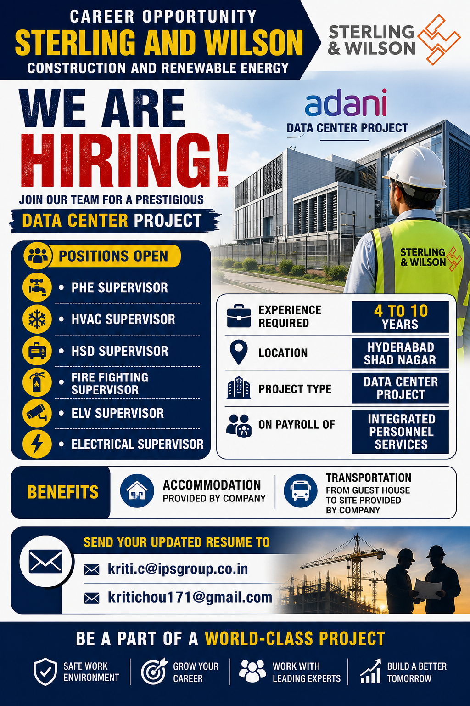

Company: Sterling and Wilson
Project: Adani Data Center Project
Location: Shad Nagar, Hyderabad, Telangana
Experience: 4 to 10 Years
Payroll: Integrated Personnel Services
Accommodation: Provided by Company
Transportation: Guest House to Site
Sterling and Wilson is recruiting experienced supervisors for an Adani Data Center project at Shad Nagar, Hyderabad. The openings are for experienced professionals in PHE, HVAC, HSD, Fire Fighting, ELV and Electrical departments.
The opportunity is suitable for candidates with practical construction and MEP site experience. Supervisors may be responsible for manpower coordination, contractor supervision, drawing coordination, installation monitoring, quality checks, progress reporting and safe execution of work.
| Position | Experience |
|---|---|
| PHE Supervisor | 4–10 Years |
| HVAC Supervisor | 4–10 Years |
| HSD Supervisor | 4–10 Years |
| Fire Fighting Supervisor | 4–10 Years |
| ELV Supervisor | 4–10 Years |
| Electrical Supervisor | 4–10 Years |
Data Center construction requires close coordination between electrical, HVAC, fire protection, plumbing, ELV and civil services. Supervisors working on such projects need practical site knowledge and the ability to coordinate multiple teams while following approved drawings, specifications and safety procedures.
This opportunity can be relevant for professionals who have experience in commercial buildings, industrial projects, high-rise construction, infrastructure projects or other large MEP installations. Previous Data Center experience can be useful, although candidates should confirm the exact requirement with the recruiter.
The PHE Supervisor role is suitable for candidates experienced in plumbing and Public Health Engineering services. Duties may include supervising water-supply, drainage, sanitary and other plumbing installation activities, coordinating workers and subcontractors, checking materials and monitoring daily progress.
The HVAC Supervisor will be responsible for supervising HVAC-related site activities. Responsibilities can include coordinating installation teams, monitoring ducting and equipment work, checking drawings, following project specifications and coordinating with other MEP departments.
The HSD Supervisor position is suitable for candidates with relevant High Speed Diesel system experience. Work may include supervision of HSD piping and associated installation activities, coordination with technical teams and ensuring safe execution according to project requirements.
The Fire Fighting Supervisor may supervise fire protection piping, equipment installation, testing activities and coordination with project engineers. Candidates should have practical knowledge of fire fighting systems and construction-site safety procedures.
The ELV Supervisor will supervise Extra Low Voltage related site activities. Depending on project specifications, the work may involve coordination of communication, security, monitoring or other ELV systems.
The Electrical Supervisor role is suitable for professionals with practical electrical construction experience. Responsibilities may include supervising electricians, monitoring installations, coordinating subcontractors, checking workmanship and reporting daily progress to senior engineers.
The stated requirement is 4 to 10 years of experience. Candidates should have relevant hands-on experience in their respective department. Experience in major commercial, industrial, high-rise, infrastructure or Data Center projects may be beneficial.
The project location is Shad Nagar, Hyderabad, Telangana. Candidates should be comfortable working at the project site and should confirm the exact reporting location and joining requirements with the recruitment team.
According to the recruitment information provided, accommodation is provided by the company. Transportation from the guest house to the project site is also provided. Candidates should confirm the exact accommodation and transport arrangements before joining.
The selected candidates are stated to be on the payroll of Integrated Personnel Services. Applicants should confirm the complete payroll structure, employment terms, salary, benefits and joining conditions with the recruitment team.
Email:
kriti.c@ipsgroup.co.in
Alternative Email:
kritichou171@gmail.com
Contact:
9136008163 / 9821242644
Suggested Subject:
Application for Supervisor – Adani Data Center Project – Hyderabad
Send an updated resume mentioning your position, total experience, current location, previous projects and relevant technical skills.
The selection process may include resume screening, shortlisting, technical discussion, project interview, HR discussion, document verification and final joining. Candidates should keep their documents ready and confirm the latest interview or joining instructions with the recruitment contact.
Working on a large Data Center project can provide valuable experience in coordinated MEP execution and modern building infrastructure. Supervisors can gain exposure to complex electrical, HVAC, plumbing, fire protection and ELV systems while working with project teams and contractors.
The stated accommodation and transportation facilities may also be useful for candidates relocating to Hyderabad. Applicants should verify all terms directly before accepting an offer.
The project is located at Shad Nagar, Hyderabad, Telangana.
The stated requirement is 4 to 10 years of relevant experience.
PHE Supervisor, HVAC Supervisor, HSD Supervisor, Fire Fighting Supervisor, ELV Supervisor and Electrical Supervisor.
Integrated Personnel Services, according to the recruitment information provided.
Yes, accommodation is stated to be provided by the company.
Yes, transportation from the guest house to the site is stated to be provided.
Candidates can send their updated resume to kriti.c@ipsgroup.co.in or kritichou171@gmail.com.
Verify the vacancy, employer, salary, payroll terms, project location and joining conditions before proceeding. Never pay money to anyone in exchange for a job, interview or selection. Independently verify recruitment information with the provided recruitment contacts before sharing sensitive documents.
Follow All India Job Alert for private jobs, construction jobs, engineering vacancies, MEP jobs, supervisor jobs, Data Center opportunities and other recruitment updates.